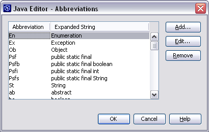
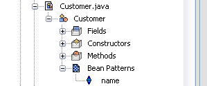

Uma introdução sobre como criar código-fonte mais rápido e menos digitação com o NetBeans 4.0.
Você sabia que as teclas em um teclado padrão estão dispostas deliberadamente de uma forma para tornar mais lenta sua digitação? Elas estão. Este layout, chamado de layout QWERTY, foi originalmente escolhido para a primeira máquina de escrever em 1872, porque impedia as pessoas de digitar tão rápido para evitar a colisão das barras de tipo mecânicas.
Esta é apenas uma das razões pelas quais você deveria parar de digitar seu código, ou melhor, porque usar o NetBeans para criar o código-fonte por si. Este artigo contém uma série de dicas sobre como você pode escrever seu código-fonte de forma maias rápida com o NetBeans 4.0, usando o menos possível de entrada via teclado.
Após ter digitado uma palavra em um arquivo de código-fonte, você pode redigitar esta palavra em qualquer lugar ao inserir as primeiras poucas letras da mesma seguido do ato de pressionar Ctrl+K. Este recurso é chamado de coincidência de palavra e funciona ao procurar por palavras que começam por letras que acaba de digitar. Ctrl+K procura acima em seu arquivo de código-fonte e Ctrl+L procura abaixo.
Após ter escrito para o loop mostrado abaixo
for(Person person : personSet) {
}
que faz a interação através de um conjunto de pessoas, você pode colocar o cursor entre chaves e digitar "pe" e pressionar Ctrl+K. O NetBeans irá imediatamente sugerir a palavra "personSet" como a palavra mais próxima que começa por "pe", e ao pressionar Ctrl+K uma segunda vez fará com que o NetBeans faça a sugestão "person" que é a segunda palavra mais próxima.
De fato, neste caso especial, você nem tem de digitar "pe" � basta pressionar Ctrl+K dentro do llop, e isso irá automaticamente digirar os identificadores "personSet" e"person"; isso funciona porque estes dois identificadores são as primeiras palavras encontradas quando o NetBeans procura acima no arquivo de código-fonte. No entanto, se você tivesse escrito dez palavras entre o topo do loop e o cursor, ao pressionar Ctrl+K faria com que o NetBeans fizesse o ciclo entre todas essas dez palavras antes de finalmente sugerir "personSet" e depois "person". Neste caso, digitar "pe" antes de pressionar Ctrl+K ajuda o NetBeans a ignorar todas as palavras que não começam com "pe".
Caso você acidentalmente pressione Ctrl+K muitas vezes e alcança uma palavra que está colocada antes da palavra que deseja, pressione Ctrl+L alguma vezes e o NetBeans irá seguir até a palavra que foi ignorada. Finalmente, observe que este recurso funciona em todo lugar em todos os tipos de arquivos � de fato ele é muito útil em arquivos XML, onde pode ser usado para digitar os nomes de identificadores que já estão presentes no arquivo.
Escrever nomes longos de identificadores torna o código mais legível. Lembrar que um identificador denominado "i" de fato identifica uma instância do tipo "Invoice" e não um "Iterator" ou um "ItemListener" pode ser difícil, especialmente em métodos de grande comprimento; se não fosse por toda a digitação envolvida, um nome como "invoice" teria sido uma melhor escolha. Agora, se fosse possível fazer com que o NetBeans escreva "invoice" por nós, não haveria nenhuma razão para escolher "i". Esta seção apresenta uma macro que faz justo isso.
Imagine que o cursor é colocado logo após "Invoice" (indicado com um "|") no código abaixo:
public class Order {
public void setInvoice(Invoice |) {
}
}
Ao acionar a macro, o NetBeans irá digitar automaticamente "invoice" usando o nome do tipo "Invoice" já presente em nosso código. A macro simplesmente redigita a palavra anterior e muda a primeira letra da palavra redigitada para minúscula. Agora, após ter feito com que o NetBeans digite a primeira ocorrência da palavra "invoice", lembre-se de usar o recurso de coincidência de palavra (Alt+K) explicado na "Dica 1" para redigitar o identificador.
A criação da macro é feita ao seguir estas seguintes cinco etapas
selection-previous-word copy-to-clipboard caret-next-word " " paste-from-clipboard caret-previous-word selection-forward to-lower-case caret-next-word
Finalmente, clique no botão OK da janela "macros" e feche-a mantendo aberta a janela "Opções" - você irá precisar dela para criar uma combinação de teclas de atalho para sua nova macro.
Ao criar macros, você normalmente usaria o recurso de gravação de macro, que permite gravar gestos do mouse e teclado e salvá-los como uma macro. No entanto, a macro aqui mostrada contém a ação "to-lower-case" e esta ainda não representada por um gesto de mouse ou teclado, portanto, é necessário adicionar manualmente esta ação.
Esta é uma de minhas macros favoritas! Normalmente, quando você define um construtor, é preciso atribuir o valor dos parâmetros do construtor para variáveis de classe, como neste exemplo:
public Person(String name, String emailAddress) {
this.name = name;
this.emailAddress = emailAddress;
}
Se você define uma macro e a vincular com Alt+=, ao invés de digitar "this.emailAddress = emailAddress;" basta digitar "this.e" seguido por Ctrl+K para obter "this.emailAddress" seguido por Alt+= que irá digitar o resto.
Consulte a "Dica 2" para obter instruções sobre como criar a macro. Aqui está o código da macro.
selection-previous-word copy-to-clipboard caret-next-word " = " paste-from-clipboard ";"
Após adquirir o hábito de usar a macro Alt+= , você verá que ela é muito mais rápida do qualquer outra coisa.
O NetBeans tem uma ampla gama de abreviatura incorporadas para digitar palavras bem conhecidas ou até construtores de código com múltiplas linhas. Você pode testar isso ao digitar "sout" seguido da barra de espaço � isso fará com que o Netbeans complete uma declaração padrão de saída por você, ou seja
System.out.println("|");
 O NetBeans não digita um caractere "|" como mostrado, ao invés disso o IDE coloca seu cursor na localização após a abreviatura ter sido substituída.
As abreviaturas incorporadas realmente economizam tempo, mas você pode se beneficiar ainda mais do recurso de abreviaturas ao definir suas próprias abreviaturas personalizadas.
Um boa forma de começar é a de examinar seus arquivos existentes de código e localizar os construtores de código de uso mais frequente. Um exemplo típico de um construtor de código de uso frequente seria o construtor if/throw encontrado neste método:
public void remove(int lower, int upper) {
if(lower < 0)
throw new IllegalArgumentException(
"Parameter \"lower\" has to be a " +
"non-negative number."
);
}
Este método começa com uma delcaração de guardião que verifica se o primeiro parâmetro é um argumento legal � caso não seja, um IllegalArgumentException é acionado.
Como é de boa prática colocar tal declaração de guardião, você pode se beneficiar da adição de uma abreviatura que o NetBeans irá expandir para o construtor if/throw. Isso pode ser feito como segue:
if(|)
throw new IllegalArgumentException("");
Observe que o NetBeans entende o uso co caractere "|", para indica onde o cursor deveria ser colocado após a expansão.
Agora tente digitar "ill" e pressione a barra de espaço e - voila!
É claro que você poderia criar uma macro que digite exatamente a mesma coisa, mas um importante benefício das abreviaturas é o fato de são fáceis de serem lembradas, já que podem receber nomes mnemônicos como "ill" ou até "illarg", ao invés de combinações enigmáticas de teclado como "Ctrl+Alt+I". A desvantagem das abreviatura é que elas não podem acionar um macro � ao menos ainda não...
O recurso de modelo realmente fácil de usar do NetBeans é completamente esquecido por muitos desenvolvedores. Se você precisa criar muitos arquivos de código-fonte que têm muitos aspectos em comum, deveria definir um modelo contendo estes aspectos comuns.
Por exemplo, em muitos sistemas há as regras de como uma classe de exceção deveria ser definida ou regras que todas as classes que estendem a classe X deveriam conter determinados métodos, variáveis, documentação ou similares.
Ao escrever uma nova classe, muitos desenvolvedores começam com um modelo de "Classe Java" vazio e escrevem tudo a mão; isso com frequência envolve digitar código que você já escreveu antes. Ao invés disso, você deveria encontrar uma classe que seja um bom ponto de partida, clicar com o botão direito do mouse em seu nó da árvore e selecionar "Salvar como modelo...". Agora, sempre que precisar criar um classe similar, basta clicar com o botão direito do mouse no pacote no qual a nova classe deve ser colocada, selecionar o item de menu "Novo > Arquivo/Pasta..." e escolher o modelo.
A definição de um modelo a partir de um arquivo existente de código-fonte, pode de fato lhe dar mais conteúdo do que o necessário, mas após a definição do modelo, é possível personalizá-lo para remover qualquer código desnecessário ao selecionar o item de menu "Ferramentas > Opções" e localizar o modelo sob "Criação e gerenciamento de código-fonte". Basta clicar com o botão direito do mouse em seu nó da árvore e selecionar "Editar", editar o arquivo e salvá-lo.
Você pode fornecer uma API para seus companheiros de trabalho, na qual eles precisam implementar a mesma interface com muita frequência, e pode ajudá-los ao fornecer um modelo de código-fonte junto com sua API. O compartilhamento de um modelo é simples como copiar de uma máquina para uma outra. Os modelos são armazenados na pasta
"... [user home dir]\.netbeans\4.0\config\Templates\[your template folder]"
Caso use o controle de versão, recomendo a criação de um conjunto de modelos do projeto e o compartilhe através de seu sistema de controle de versão.
Se você escreve Java a mão, uma enorme quantidade de tempo pode ser gasta para escrever os métodos getter e setter triviais. Afortunadamente, o NetBeans pode gerar esses dois métodos por você, e até o IDE tem mecanismos incorporados para os manter com eficiência. Desde o NetBeans 4.0, o mecanismo de refatoração tem suportado a geração dos métodos getter e setter padrão a partir de variáveis da classe. A criação do métodos getName e setName são aqui mostrados
public class Customer {
private String name;
public String getName() {
return name;
}
public void setName(String name) {
this.name = name;
}
}
tudo que você precisa fazer é declarar o nome da propriedade, clicar com o botão direito do mouse na mesma, e selecionar o item do menu suspenso "Refatorar... > Campos encapsulados...".
 Após a geração do métodos, você pode desejar mudar o nome da propriedade "nome". Isso poderia potencialmente envolver muita digitação, já que a palavra "nome" ou "Nome" está dispersa em todo seu arquivo de código-fonte. Temos sorte, pois o NetBeans tem um recurso muito bom denominado "Padrões de Beans" que soluciona este problema. Se você localiza sua classe na árvore Projeto e expande seu nó da árvore, o NetBeans exibe um nó denominado "Padrões de Beans" que contém um subnó para cada propriedade bean da classe. Este nó pode ser renomeado a pressionar F2 ou ao clicar com o botão direito do mouse e selecionar "Renomear...", e se você renomeia sua propriedade desta forma, o NetBeans fará todas as alterações necessárias em seu lugar.
O recurso Padrões de Beans também permite alterar com eficiência o tipo da propriedade. Se você clicar com o botão direito do mouse no nó da árvore da propriedade e selecionar o item de menu suspenso "propriedades" isso abre uma janela contendo as informações sobre a propriedade. Aqui você pode alterar o tipo e o NetBeans irá alterar o código-fonte de acordo.
Em resumo: você nunca deveria escrever declarações de importação. O NetBeans 4.0 introduziu um recurso realmente brilhante denominado "Corrigir importações, acessível através da combinação das teclas Alt+Shift+F. Este recurso analise seu código-fonte e procura por nomes de classes que ainda não foram importadas. Se uma classe X ainda não foi importada e somente uma classe em todo o projeto é chamada de X, o NetBeans irá importar automaticamente essa classe. Se duas classes em dois pacotes diferentes são denominadas X, o NetBeans trará uma caixa de diálogo perguntando qual classe prefere importar. "Corrigir importações" funciona extremamente bem, e remove automaticamente as importações não mais necessárias.
Usando estas dicas você logo verá que está produzindo código melhor com menos erros de sintaxe em menos tempo. Também, se você está entre os muitos desenvolvedores que exprimentaram dores nos dedos em projetos intensos de código, fazer com que o NetBeans escreva o código por você é a forma definitiva de seguir adiante.
Quanto mais personalziamos o IDE para se adquar as necessidades específicas de seu projeto, mais rápido poderá implementar seu sistema. O NetBeans 4.0 é como um perfeito carro de corrida - rápido e divertido de andar. Mas tal como o carro de corrida, o ajuste fino é essencial. Faça o ajuste fino do IDE ao personalizar as abreviaturas, macros e modelos, para se adequar as nececessidades específicas de seu projeto e libere o verdadeiro poder do NetBeans 4.0!
.... (Foto) é o co-fundador da empresa dinamarquesaROCK IT, e a inteligância dominante atrás do revolucionário sistema de gerenciamento de componente Java orientado ao conteúdo, Puls, que foi desenvolvido inteiramente com o NetBeans (a ser lançado na primavera de 2005).